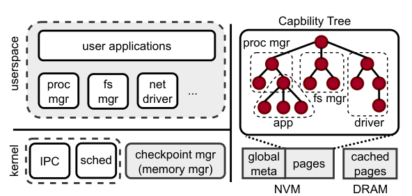
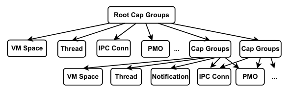
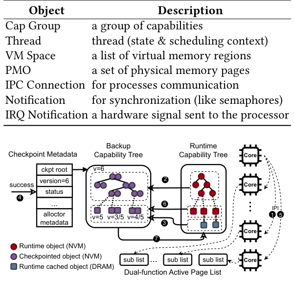
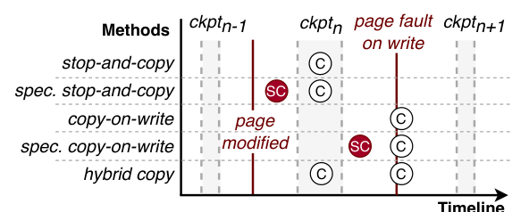
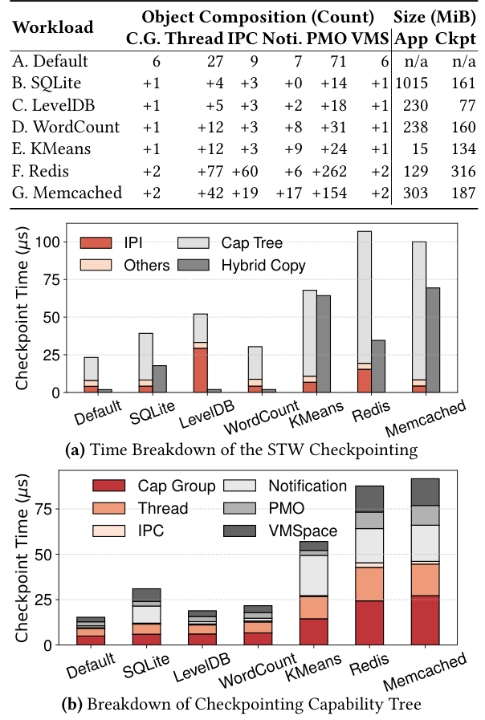
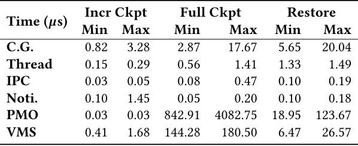
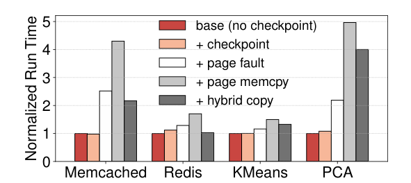
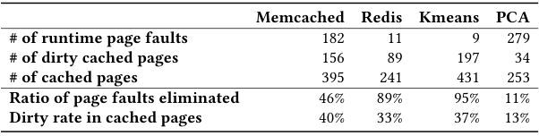
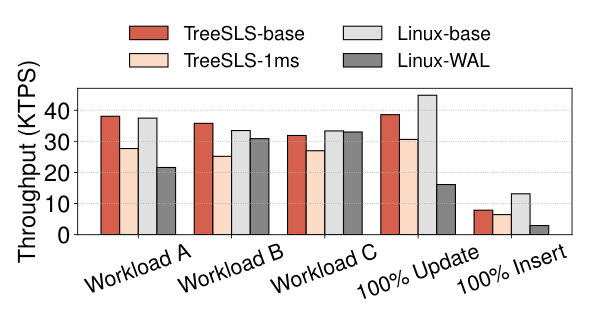
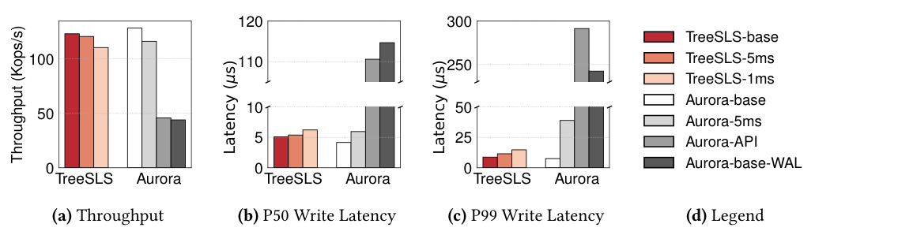

TreeSLS: A Whole-system Persistent Microkernel with Tree-structured State Checkpoint on NVM
This page was written by an AI model to give a high-level overview of the paper. Please check the paper for detail: ACM Digital Library.
Single-level store (SLS) is an old idea for killing the memory/storage split: instead of applications calling file system APIs to persist data, the whole system runs as if everything were in memory, and the OS periodically checkpoints that memory to a persistent device. Recovery just replays the last checkpoint. This removes an entire class of application-level crash-consistency bugs and gives near-instant restart, which matters for things like in-memory caches that otherwise need hours to rewarm after a reboot. But existing SLSs, from KeyKOS/EROS through the recent Aurora, still checkpoint onto a device that is architecturally separate from runtime memory: data is manipulated in DRAM at byte granularity and flushed to disk or SSD at block granularity.
That mismatch is the source of both of SLS's classic problems. Byte-sized changes force block-sized writes on checkpoint, causing write amplification. And because flushing to storage is slow, checkpoints are taken asynchronously in the background, which caps how often a consistent checkpoint can be produced and widens the window of unpersisted updates that a crash can lose. That window is fatal for applications that need external synchrony, meaning a response to a client is only correct if everything that response depends on is already durable. Prior SLSs patch this with ad hoc journaling APIs that applications must adopt, which drags the complexity SLS was supposed to remove right back into the application.
Byte-addressable, DRAM-speed non-volatile memory (NVM) looks like a fix, since it removes the separate storage tier. But just running on NVM does not make a system persistent: registers and, without Intel eADR, CPU caches are still volatile, so software checkpointing is still required. And because the same NVM page can now simultaneously be the live runtime object and part of the last consistent checkpoint, the OS needs a careful scheme to know which copy to trust after a crash.
TreeSLS's key idea is to exploit the microkernel's own object model. Microkernels already represent every resource (threads, address spaces, memory regions, IPC endpoints) as a capability, and group capabilities into a capability tree. The paper's observation is that this tree already encodes the entire system's state, so checkpointing the tree checkpoints the whole system, with no need to separately locate and serialize complex monolithic-kernel structures like inode caches or socket buffers. TreeSLS pairs this tree with an in-kernel, journaled checkpoint manager that allocates all NVM space and is itself excluded from (and resilient without) the regular checkpoint. On each checkpoint, a leader core halts the other cores, snapshots the tree (cheap objects copied directly, user memory pages left in place and merely write-protected), other idle cores speculatively copy pages in parallel, and the checkpoint commits with one atomic version bump. Because the memory being checkpointed is already non-volatile, there is no post-checkpoint flush to wait for: once the tree is updated, the checkpoint is durable. High checkpoint frequency (TreeSLS targets 1 ms) then lets external synchrony fall out almost for free: a driver just withholds outgoing packets until the next checkpoint commits, instead of the application doing its own journaling.
Built on the ChCore microkernel and evaluated on a dual Xeon Gold 6330 machine with 1 TiB Optane PM, TreeSLS completes a whole-system checkpoint in around 100 microseconds for workloads with many threads and objects, and can sustain checkpointing every 1 ms with what the paper calls reasonable overhead. On real applications, TreeSLS achieves up to 2.2x the throughput of Redis with its own AOF persistence enabled, and 2.4x and 2.5x the throughput of Aurora's journaling API and RocksDB's write-ahead log respectively, under the paper's benchmark configurations.

Key takeaways
- Prior SLSs (EROS, Aurora) still checkpoint from volatile DRAM onto separate persistent storage, which causes write amplification and caps checkpoint frequency, worsening data-loss risk and external synchrony.
- TreeSLS's capability tree, already present in any capability-based microkernel, is reused as the single data structure that captures all whole-system state for checkpointing.
- An in-kernel, redo/undo-journaled checkpoint manager owns NVM space allocation and is deliberately excluded from the checkpoint it manages, avoiding a bootstrapping problem.
- NVM being both runtime memory and storage lets TreeSLS reuse unmodified pages directly as part of the checkpoint (via copy-on-write and a per-page version number), instead of copying everything on every checkpoint.
- Hybrid copy migrates hot pages to DRAM so they can be synchronously stop-and-copied each checkpoint, cutting the page faults that would otherwise dominate runtime overhead at 1 ms checkpoint intervals.
From capability tree to whole-system checkpoint
Why the two-tier SLS design breaks down, how TreeSLS captures and checkpoints state, hybrid copy, external synchrony, and the implementation.
1 · Background: the two-tier SLS problem
SLS extends the memory abstraction down to storage so applications never see files: all data lives in a single level, and the OS checkpoints it to survive crashes. Classic SLSs (KeyKOS/EROS, and the modern NVMe-based Aurora) still run on volatile DRAM and periodically copy dirty data to a separate persistent device, using an append-only or batched checkpoint area to bound write amplification. Because flushing to that device is slow relative to DRAM, checkpoints are finished asynchronously in the background, and the next checkpoint cannot start until the last one's dirty data is fully persisted. This limits checkpoint frequency and, in turn, how quickly the system can offer external synchrony, i.e., guarantee that a reply to an external client reflects durable state. Existing SLSs resolve this with custom journaling APIs, pushing persistence-related code back into applications.
2 · The capability tree captures whole-system state

TreeSLS organizes every system resource, cap groups, threads, VM spaces, physical memory objects (PMOs), IPC connections, notifications, and IRQ notifications, as capability-referred objects in one capability tree reachable from a root cap group. Each user-space process, whether an application or a system server such as the file system or process manager, is simply a sub-tree. Because a microkernel keeps almost no implicit state outside this tree (unlike a monolithic kernel's FD tables, dentry caches, and inode caches, which have to be found and related by hand), checkpointing the tree is equivalent to checkpointing the entire system. A capability object root (ORoot) structure is kept per unique object so that an object referenced by multiple capabilities is checkpointed only once per round, and so TreeSLS can always locate both the runtime object and its backups.
3 · The checkpoint manager: a failure-resilient NVM allocator
The checkpoint manager is an in-kernel module that manages all NVM space (a buddy system for general allocation, slab systems for small fixed-size objects) for both runtime objects and checkpoints. To avoid a bootstrapping problem, i.e., needing to checkpoint the thing that manages checkpointing, its own state is never included in the regular checkpoint. Since that state is nonetheless critical, the checkpoint manager protects itself with redo/undo journaling, so an in-flight allocation interrupted by a power failure can be rolled forward or back to a consistent state on reboot, before the rest of the system is recovered from its checkpoint.
4 · The checkpoint/restore procedure

- A leader core sends IPIs to force every other core into a quiescent state; interrupts are disabled in kernel space so no core can be caught mid-update of kernel state.
- The leader checkpoints the current runtime capability tree into a backup capability tree. User-space memory pages are not copied here; they are instead marked read-only in the page table.
- In parallel, the non-leader cores speculatively copy a set of pages likely to be written soon (see hybrid copy, below).
- The checkpoint is atomically marked complete and the global checkpoint version number is incremented in the global metadata area on NVM; this is the commit point.
- The leader sends IPIs telling the other cores to resume.
- At runtime, a write to a read-protected page faults; the handler duplicates the page into the backup tree, completing copy-on-write for that page.
- Restore reconstructs the runtime capability tree from the backup tree. The checkpoint manager's own state is not part of the tree, so recovery first replays its journal to identify and roll back any partially completed malloc/free operations, then rebuilds the rest of the system from the checkpoint.
Correctness follows from two facts: every core except the leader is parked at a syscall or user-space boundary, so no core is actively mutating kernel state while the snapshot is taken, and all system state is covered by either the capability tree or the journaled checkpoint manager. See the Evaluation tab for measured checkpoint and restore times.
5 · Per-object checkpoint strategies
Not every object is checkpointed the same way; the choice follows object size and mutation frequency.
| Object | Strategy |
|---|---|
| Cap group | Allocate space in the backup tree and copy capabilities directly; each capability stores a pointer to the object's ORoot rather than to the backup object. |
| Thread | Copy the thread context (registers, scheduling state) directly; safe because every core is trapped in the kernel during the checkpoint, so user-thread state is already consistently saved. |
| IPC connection, notification, IRQ notification | Copied directly to the backup tree. |
| VM space | Duplicate the list of virtual memory regions; the page table itself is not checkpointed since it can be rebuilt lazily from page faults after recovery, and is kept in DRAM since it never needs to be persisted. |
| PMO (physical memory object) | Duplicate the PMO's radix tree of pages immediately (this alone makes the checkpoint of that PMO durable); individual pages are checkpointed asynchronously via copy-on-write, described next. |
Some state, such as kernel buffers and copy-on-write bits in page tables, is not naturally part of the capability tree but is still needed for consistency; TreeSLS folds these in as special tree nodes.
6 · Consistency with versioning
Rather than keeping two full persistent backups of every object (as prior schemes do, wasting memory and copies), TreeSLS lets the PMO's live runtime page double as one of its own backups, since it already lives on NVM. Each page gets at most one additional backup page, tracked in a checkpointed radix tree whose leaves (checkpointed pages, or CPs) hold a version number and a backup address. With global version 5, three cases can occur on a crash: a backup whose version equals the global version is used for recovery (the page was copied before being modified again); a backup with a smaller version, or none at all, means the runtime page itself was never modified since the checkpoint and is used directly. TreeSLS only needs to restore pages whose backup version equals the global version; everything else is already correct in place.
7 · Hybrid copy: moving page copying off the critical path

At a 1 ms checkpoint interval, page-fault handling and page copying dominate runtime overhead (see Evaluation). The paper compares four baseline page-checkpointing strategies: stop-and-copy (copy all modified pages during the stop-the-world pause, simple but slow), speculative stop-and-copy (copy dirty pages early, re-copy if modified again before the pause), copy-on-write (mark pages read-only and copy lazily on the first write after a checkpoint, moving cost to runtime instead of the pause), and speculative copy-on-write (predict and pre-copy pages likely to be written, to dodge the fault).
TreeSLS's hybrid copy combines these: it tracks per-page hotness via a dual-function active page list, and once a page's hotness crosses a threshold it is migrated to DRAM. During the stop-the-world pause, idle cores walk a sub-list of the active page list, stop-and-copy any dirty DRAM pages (these are the hot pages, now handled synchronously and in parallel rather than via a page fault), and migrate newly hot pages into DRAM; pages that go cold are migrated back to NVM and dropped from the list. Pages not in DRAM are still handled with ordinary copy-on-write. Supporting this requires extending each page's checkpoint structure from a single backup (CP) to a checkpointed page pair (CPP), since a DRAM-cached page needs one backup for the in-flight checkpoint and one for the last consistent checkpoint; NVM-to-DRAM and DRAM-to-NVM migrations update these pairs and the runtime page table so recovery can always tell which NVM page is current.
8 · Transparent external synchrony
External synchrony requires that state a response depends on is durable before the response is sent. Because checkpoints are both frequent and fast, TreeSLS implements this by simply delaying externally visible operations (e.g., sending a network packet) until the next checkpoint commits. User-space services such as drivers register a checkpoint callback (invoked at the end of each checkpoint) and a restore callback (invoked at the end of recovery). A modified ring buffer with three pointers, reader, writer, and visible writer, all stored in an eternal PMO (a PMO excluded from rollback), implements this for a send queue: a new message advances writer but stays invisible until the checkpoint callback advances visible writer past it. On recovery, the restore callback discards messages enqueued after the last checkpoint (since the application that sent them will be rolled back and will resend), while leaving reader untouched for messages already handed to hardware; the driver separately checks with the hardware whether such a message actually went out. This machinery lives in the driver, not the application, so applications gain external synchrony with zero code changes. The paper implements it for a local, same-machine network server; a real NIC driver is left as ongoing work.
9 · Implementation
TreeSLS is built on ChCore, an educational multicore capability-based microkernel (~21k LOC) with POSIX support via musl-libc. TreeSLS adds roughly 5k LOC in kernel space: ~3.3k LOC for checkpoint/restore, ~1.2k LOC for the NVM memory allocator, plus modifications to IPI handling and syscalls. In user space, the network server is modified by about 500 LOC to support external synchrony. Measured results for all of this appear in the Evaluation tab.
Evaluation
What the paper measures, its key figures and tables in the paper's order, and what each one tells us.
Experiments run on a single NUMA node with checkpoint frequencies up to 1000 Hz (one checkpoint per millisecond), comparing TreeSLS against Linux 5.4 and the Aurora SLS, plus applications' own persistence mechanisms (AOF, WAL).
| What | As stated in the paper |
|---|---|
| Platform | Dual Intel Xeon Gold 6330 CPUs with eADR support, 2.0 GHz fixed clock, Hyperthreading on, Turbo Boost off; one NUMA node with 256 GiB DDR4 DRAM and 1 TiB Intel Optane Persistent Memory |
| Workloads | Phoenix-2.0 suite (WordCount, KMeans, PCA), Redis-6.0.8, Memcached-1.6.21, LevelDB-1.23, RocksDB-6.6, SQLite3, YCSB on Redis, Facebook's Prefix_dist workload on RocksDB |
| Baselines | Linux Kernel 5.4 (musl-libc build for fairness), Aurora SLS; Linux-WAL (Redis's AOF on Ext4-DAX over Optane PM); Aurora-API (Aurora's journaling API); Aurora-base-WAL (RocksDB's own WAL on Aurora) |
| Metrics | Stop-the-world checkpoint time, per-object checkpoint/restore time, normalized runtime overhead, page-fault elimination ratio, throughput (Kops/s, KTPS), P50/P95/P99 latency |
A whole-system checkpoint takes 25 to 100 microseconds, dominated by the capability tree

What it shows. Panel (a) breaks down the stop-the-world checkpoint time across seven workloads (Default, SQLite, LevelDB, WordCount, KMeans, Redis, Memcached) into IPI handling, checkpointing the capability tree, other overhead, and (in a separate bar) the parallel hybrid-copy time on idle cores. With no additional workload, checkpoint time is as low as about 25 µs; single-threaded SQLite and LevelDB are similarly low; multi-threaded applications finish in around 100 µs. Panel (b) further splits the capability-tree time by object type (Cap Group, Thread, IPC, Notification, PMO, VM Space); Cap Group and Thread dominate for workloads with many objects and threads, and VM Space checkpointing is costly because it marks all newly changed pages read-only.
What to take from it. The capability tree, not the NVM-specific machinery, is the main cost of a checkpoint, and that cost scales with object count and thread count rather than with application data size. This is what makes sub-millisecond, 1 kHz checkpointing feasible even for multi-threaded applications.
Incremental per-object checkpoints run in nanoseconds to a few microseconds

What it shows. The table gives minimum and maximum checkpoint and restore time for a single object of each type, across all workloads, split into incremental checkpoints (reusing already-built backup structures) and full checkpoints (building the backup object from scratch, which happens only on an object's first two checkpoints). Incremental checkpoints top out at 3.28 µs (Cap Group); most objects are nanosecond-scale. Full checkpoints are longer, e.g., PMO up to 4082.75 µs, because a 100 MiB Phoenix data file's radix tree has to be built; VM Space full checkpoints run 144.28 to 180.50 µs. Restore times range from about 0.1 µs (IPC, Notification) up to 123.67 µs (PMO) and 26.57 µs (VM Space).
What to take from it. The one-time cost of building backup structures (full checkpoint) is paid once per object's lifetime, after which steady-state checkpointing is cheap; this is consistent with Result 1's whole-system numbers being dominated by object count rather than data size, and explains why TreeSLS can sustain a 1 ms interval once a workload is warmed up.
Page faults and page copying, not checkpointing itself, cause most runtime overhead, and hybrid copy cuts it by up to 49%

What it shows. Normalized run time for Memcached, Redis, KMeans, and PCA, shown as successive additions: a no-checkpoint baseline, adding stop-the-world checkpointing alone, adding page-fault handling, adding the page memcpy on each fault, and finally adding hybrid copy. Checkpointing alone adds only marginal overhead; page faults and copying add most of the overhead; enabling hybrid copy reduces that overhead by up to 49%.
What to take from it. The expensive part of frequent checkpointing on NVM is not taking the checkpoint but servicing the resulting copy-on-write faults on hot pages; migrating those pages to DRAM so they can be copied synchronously and in parallel (hybrid copy) is what makes 1 ms checkpointing practical for memory-intensive workloads.
Hybrid copy eliminates 11 to 95% of page faults, depending on workload access pattern

What it shows. For each workload: the number of page faults that still occur at runtime, the number of DRAM-cached pages that are actually dirty between two checkpoints, the total number of DRAM-cached (hot) pages, the fraction of all modified pages that were pre-copied as hot (fault-elimination ratio), and the fraction of cached pages that turn out dirty. Memcached: 182 faults, 46% of modified pages eliminated, 40% dirty rate among 395 cached pages. Redis: 11 faults, 89% eliminated. KMeans: 9 faults, 95% eliminated. PCA: 279 faults, only 11% eliminated, with a low 13% dirty rate among 253 cached pages.
What to take from it. Hybrid copy works best when a workload's writes concentrate on a small, stable hot set (KMeans, Redis); it works poorly for PCA, whose write pattern apparently does not match the hotness heuristic, leaving most faults unhandled by the DRAM cache. The hotness-threshold classifier is effective but workload-dependent.
On YCSB/Redis, TreeSLS beats a WAL on write-heavy workloads but loses on read-heavy ones

What it shows. Throughput on YCSB workloads A (50% read/50% write), B (95% read), C (100% read), 100% Update, and 100% Insert, for four configurations: TreeSLS-base and Linux-base (no persistence), TreeSLS-1ms (transparent 1 ms checkpointing), and Linux-WAL (Redis's own AOF on Ext4-DAX/Optane). On the write-heavy workloads, TreeSLS-1ms degrades throughput by 18 to 21% versus its own baseline, while Linux-WAL degrades by 64 to 78%; TreeSLS-1ms's absolute throughput is 1.9x to 2.2x that of Linux-WAL. On Workload A, TreeSLS-1ms still beats Linux-WAL by 28% (27% overhead for TreeSLS-1ms versus 42% for Linux-WAL relative to their baselines). On read-heavy Workloads B and C, TreeSLS-1ms performs worse than Linux-WAL, degrading throughput by 30% and 15% respectively, because Linux-WAL logs nothing for reads while TreeSLS still pays for system-wide checkpointing.
What to take from it. TreeSLS's advantage comes from avoiding the WAL's double write (data plus log entry) on every write operation; this advantage shrinks as the workload becomes read-dominated, since TreeSLS's cost is tied to checkpoint frequency rather than to the read/write ratio.
On RocksDB, TreeSLS's transparent checkpointing beats Aurora's own mechanisms and both custom journaling APIs

What it shows. Throughput and P50/P99 write latency on Facebook's Prefix_dist workload, across TreeSLS-base, TreeSLS-5ms, TreeSLS-1ms, Aurora-base, Aurora-5ms, Aurora-API (Aurora's journaling API), and Aurora-base-WAL (RocksDB's own WAL running on Aurora). TreeSLS-1ms drops throughput by 10% and raises latency by 22% (P50) and 69% (P99) relative to TreeSLS-base; TreeSLS-5ms drops throughput by only 2%, with latency up 6% (P50) and 32% (P99). Aurora-5ms drops throughput by 9% relative to Aurora-base, with latency up 43% (P50) and 4.2x (P99). TreeSLS-1ms's absolute throughput is lower than Aurora-5ms's, which the paper attributes to TreeSLS's ChCore/musl-libc baseline being slower than Aurora's FreeBSD baseline, plus a 1 ms external-synchrony delay added to every operation versus Aurora's 5 to 10 ms per-checkpoint delay. TreeSLS achieves 2.4x the throughput of Aurora-API and 2.5x the throughput of RocksDB's own WAL (Aurora-base-WAL).
What to take from it. Because RocksDB is write-intensive and many writes land directly on an in-memory structure that TreeSLS already persists, transparent checkpointing avoids the double write that both Aurora's API and RocksDB's native WAL require; the comparison with Aurora's own checkpointing (Aurora-5ms) also shows TreeSLS's higher checkpoint frequency costs proportionally less latency overhead at P50/P99 for a shorter per-checkpoint delay.
Two further experiments appear in the paper without a reproduced figure here. A checkpoint-frequency sweep on Memcached (its Figure 11) shows P50/P95 SET and GET latency rising as the checkpoint interval shrinks below 10 ms; at a 1 ms interval, TreeSLS adds 11 to 160 µs of extra latency to an otherwise microsecond-scale, machine-local UDP-like exchange. An external-synchrony experiment on Redis (its Figure 12), with 50 clients sending batches of 32 SET requests for 10 million 1024-byte keys, shows that delaying responses until the next checkpoint adds roughly one checkpoint interval of latency and reduces throughput, since clients remain blocked waiting for a reply even when concurrency is increased.
FAQ
Q·What is a single-level store, in one sentence?▾
An OS design where there is no separate file system: all data, ephemeral or permanent, is accessed as memory, and the OS transparently makes it durable by periodically checkpointing the whole system to a persistent device.
Q·How is TreeSLS different from Aurora, the other recent SLS?▾
Aurora still treats DRAM and its persistent device as separate tiers and checkpoints by flushing dirty data across that boundary, which the paper argues limits checkpoint frequency (Aurora's checkpoint interval cannot usefully go below the 5 to 7 ms its flush actually takes). TreeSLS runs entirely on NVM, so runtime data is already durable and a checkpoint just needs to fix a consistent view of the existing capability tree, enabling checkpoints as frequent as 1 ms.
Q·Why does the microkernel architecture matter here, rather than just the NVM?▾
NVM solves the device-tier problem, but something still has to represent "the whole system" so it can be checkpointed. A monolithic kernel's state is scattered across many ad hoc structures (FD tables, caches, driver state) that a checkpointer would have to understand individually. A microkernel already funnels nearly all of that into one capability tree, so TreeSLS gets a ready-made, uniform checkpoint target essentially for free.
Q·What exactly is external synchrony, and why is it hard?▾
It means a reply sent to an external client (or any visible side effect) must only happen after everything that reply depends on is durably persisted. It is hard in an SLS because checkpoints are not instantaneous and not infinitely frequent, so there is always some window of committed-but-not-yet-checkpointed state; if a reply goes out during that window and the system then crashes, the reply was a lie.
Q·How does TreeSLS give external synchrony without an application-level journal?▾
It simply delays anything externally visible, like sending a network packet, until the next checkpoint has committed. Because checkpoints are frequent (every 1 ms in the evaluation), this only adds about one checkpoint interval of latency. The delaying logic lives in a modified driver (registered checkpoint/restore callbacks and an eternal, non-rolled-back PMO for the device's queue state), not in the application.
Q·Does the checkpoint manager checkpoint itself?▾
No, deliberately. Checkpointing the component responsible for checkpointing would create a circular bootstrapping problem. Instead its own metadata (an NVM buddy/slab allocator) is protected with redo/undo journaling, so it can always be brought back to a consistent state on reboot before the rest of the system is restored from the capability tree.
Q·What happens to in-flight memory allocations if the system crashes mid-checkpoint?▾
On reboot, TreeSLS first replays the checkpoint manager's journal to undo or redo any malloc/free operation that was only partially completed at the moment of the crash, restoring the allocator's buddy/slab metadata to a consistent state. Only then does it use the capability tree to restore the rest of the system.
Q·Why is a page's write-fault copy safe, given the page is already on NVM?▾
Because the runtime page itself can serve as one of its own backups. TreeSLS tracks a version number per page; after a checkpoint, the first write to a read-protected page copies the page's pre-write content into a backup slot before the write proceeds, and that backup's version is compared against the global checkpoint version on recovery to decide whether to use the backup or the (already-correct) runtime page.
Q·What is hybrid copy solving that plain copy-on-write doesn't?▾
Plain copy-on-write defers all page-copy cost to runtime page faults, which, at a 1 ms checkpoint interval, becomes the dominant source of overhead (up to several times slowdown in the paper's breakdown). Hybrid copy identifies pages that are modified almost every checkpoint, migrates them to DRAM, and copies them synchronously during the stop-the-world pause using otherwise-idle CPU cores, removing many page faults from the application's critical path.
Q·Do applications need to be rewritten to run on TreeSLS?▾
No. The paper reports running unmodified Redis, Memcached, RocksDB, LevelDB, and SQLite. Only system services such as the network driver were modified (about 500 LOC) to support external synchrony; applications are unaware persistence is happening at all.
Q·Why does TreeSLS beat a write-ahead log on write-heavy workloads but lose on read-heavy ones?▾
A WAL pays an extra write (the log record) for every write operation and nothing for reads, so its overhead scales with write volume. TreeSLS's overhead comes from system-wide checkpointing at a fixed interval, which is paid regardless of whether the workload is reading or writing. On write-heavy workloads TreeSLS avoids the WAL's double write and wins; on read-heavy workloads the WAL has almost no overhead to beat, so TreeSLS's fixed checkpoint cost loses out.
Q·What does the paper say it does not yet handle?▾
Its Discussion section lists: uniform persistence for all data regardless of whether it actually needs it; no handling of NVM capacity exhaustion (memory over-commitment), proposed to be solved with a cold-page list evicting to SSD/disk; no redundancy against NVM data corruption, proposed to be solved with multi-version checkpoints, replication, or erasure coding; and no implementation of an eidetic (arbitrary-past-version) recovery interface, though the paper argues its existing ORoot mechanism could support one.